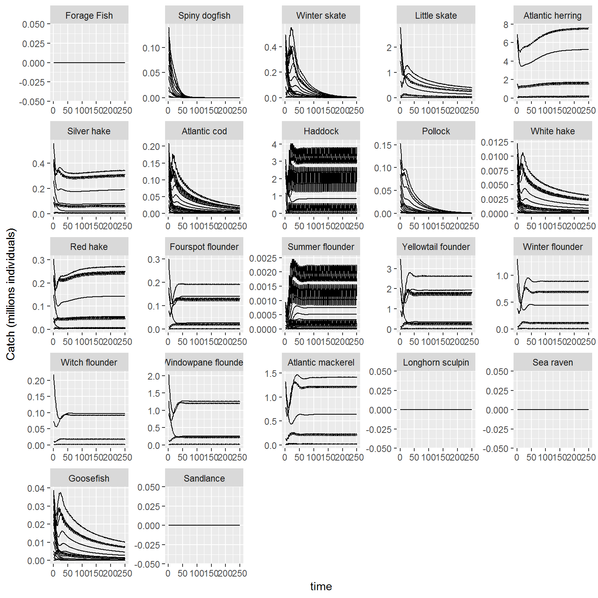
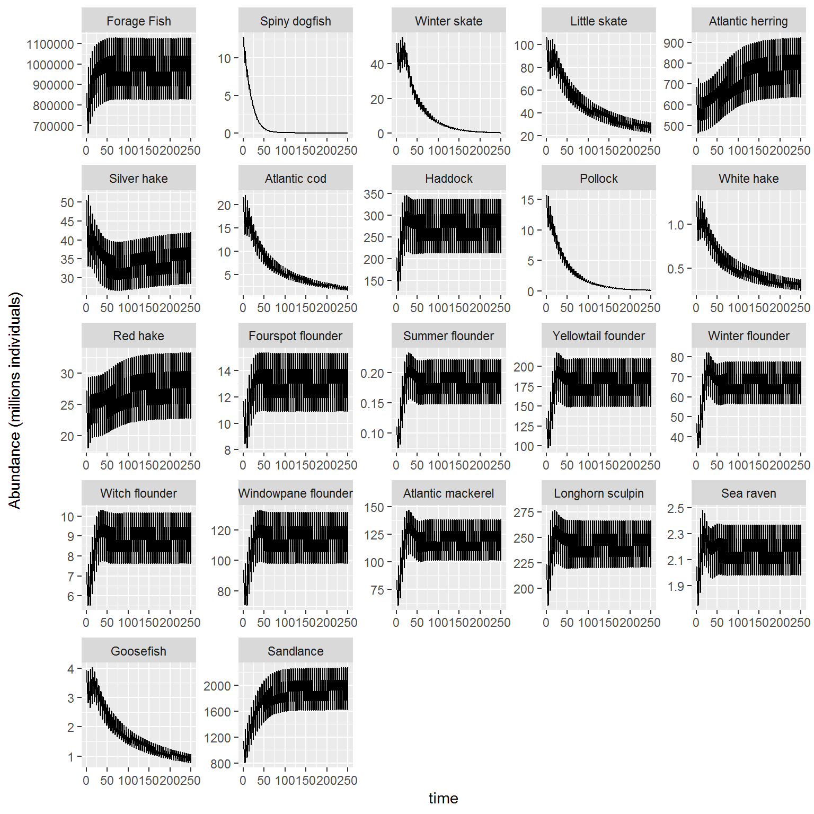
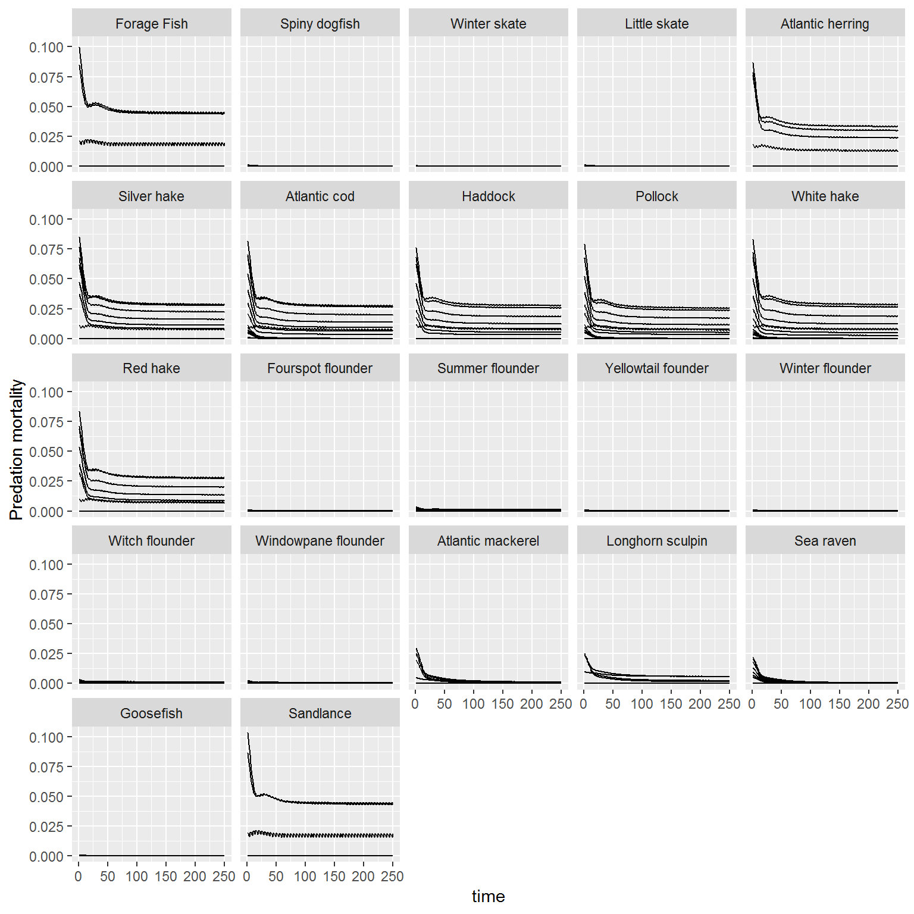
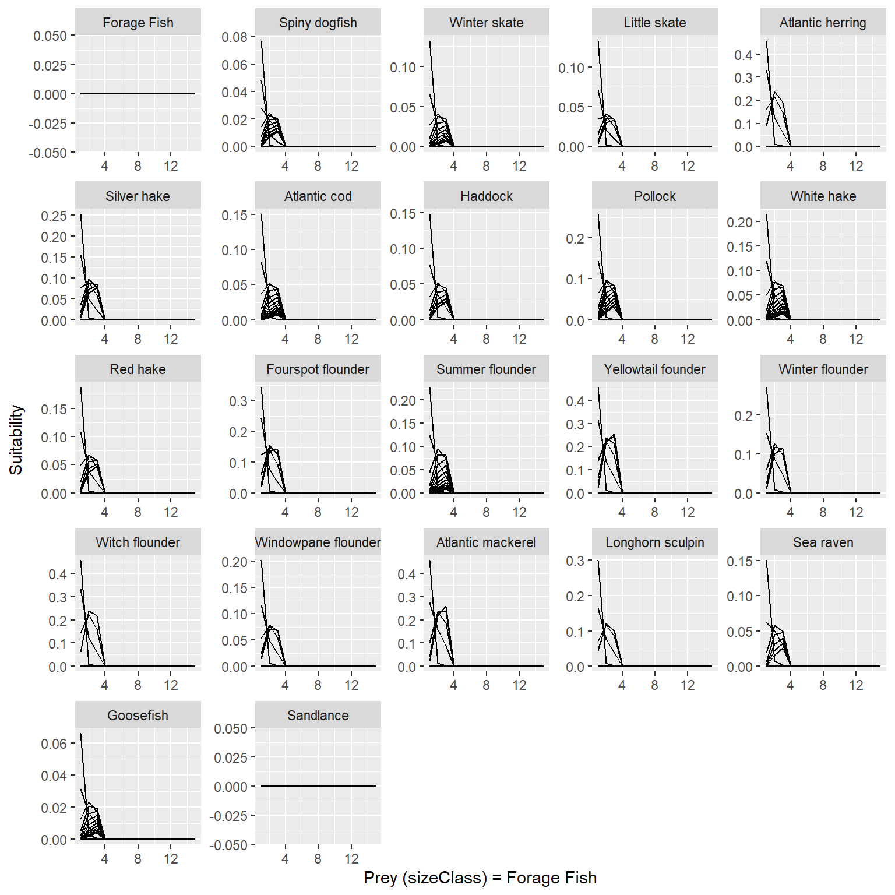

vignettes/LeMANS.Rmd
LeMANS.RmdThe LeMANS package is an implementation of the LeMANS model as described in the Hall et al (2006) and Rochet et al (2011) publications. The data provided (bundled with the package - lazily loaded) reflects the Georges Bank (USA) data described in the Rochet et al. paper.
rochet_GB_modelSetuprochet_GB_parameterValuesrochet_GB_initialValuesrochet_GB_foodwebrochet_GB_speciesThe contents of these can be viewed simply by typing in the names in the console. To view the description of a data object use help. For example ?rochet_GB_parameterValues.
To run the model right out of the box:
results <- key_run(Ffull=0.4, nYrs=50, rochet_GB_modelSetup, rochet_GB_parameterValues, rochet_GB_initialValues, rochet_GB_foodweb, rochet_GB_species)results is a list of several output variables (catch, recruits, M1, M2, F, spawning stock biomass, N, and more).
str(results)
#> List of 14
#> $ N : num [1:15, 1:22, 1:250] 6.47e+11 2.04e+11 9.15e+09 0.00 0.00 ...
#> $ M1 : num [1:15, 1:22] 0.0546 0.0458 0.0442 0 0 ...
#> $ M2 : num [1:15, 1:22, 1:250] 0.0216 0.0849 0.0997 0 0 ...
#> $ eF : num [1:15, 1:22] 0 0 0 0 0 0 0 0 0 0 ...
#> $ catch : num [1:15, 1:22, 1:250] 0 0 0 NaN NaN NaN NaN NaN NaN NaN ...
#> $ SSB : num [1:22, 1:50] 2576.55 2.01 95.2 28.57 31.88 ...
#> $ recruits : num [1:22, 1:50] 4.06e+11 2.58e+06 2.03e+07 3.77e+07 3.41e+08 ...
#> $ modelTimeStep : num 0.218
#> $ growthProportions : num [1:15, 1:22] 0.03201 0.00587 0 0 0 ...
#> $ ration : num [1:15, 1:22] 0.686 7.866 15.458 0 0 ...
#> $ growthEfficiency : num [1:15, 1:22] 0.18486 0.04714 0.00102 0 0 ...
#> $ maturityProportions: num [1:15, 1:22] 0.00873 0.7437 1 0 0 ...
#> $ suitability : num [1:330, 1:15, 1:22] 0 0 0 0 0 0 0 0 0 0 ...
#> $ sizePreference : num [1:330, 1:15, 1:22] 0.193 0.889 0.844 0 0 ...Plotting routines help visualize these output variables
Type ?key_run for more help
Several functions are invoked when running the model. These functions can be changed by the user to suit their needs.
calc_M1calc_M2_ccalc_maturitycalc_phicalc_population_growthcalc_rationcalc_recruitscalc_sizePref_suitabilitycalc_FHelp is available for all functions or feel free to write your own to replace any of these.
Visualization of output is critical. A basic plotting tool is provided to view output. The user is encouraged to write their own plotting routines.
###To produce a plot of catch by species for each size class with all of the species yaxes scaled to their output:
plot_key_run(results$catch/1E6, ylabel = "Catch (millions individuals)", speciesNames=rochet_GB_species, scales="free")
###To produce a plot of total abundance aggregated over each size class with species yaxes fixed across all species:
plot_key_run(results$N/1E6, ylabel = "Abundance (millions individuals)", is.aggregated=T, speciesNames=rochet_GB_species, scales="free")
###To produce a plot of M2 predation for each size class with species yaxes fixed across all species:
plot_key_run(results$M2, ylabel = "Predation mortality", speciesNames=rochet_GB_species, scales="fixed")
###To produce a plot of the suitability forage fish to other species in the model:
plot_key_run(results$suitability, ylabel = "Suitability", speciesNames = rochet_GB_species, scales="free",speciesSuitability = "Forage fish",predOrPrey = "prey")
Hall et al. (2006). A length-based multispecies model for evaluating community responses to fishing. Can. J. Fish. Aquat. Sci. 63:1344-1359.
Rochet et al. (2011). Does selective fishing conserve community biodiversity? Prediction from a length-based multispecies model. Can. J. Fish. Aquat. Sci. 68:469-486